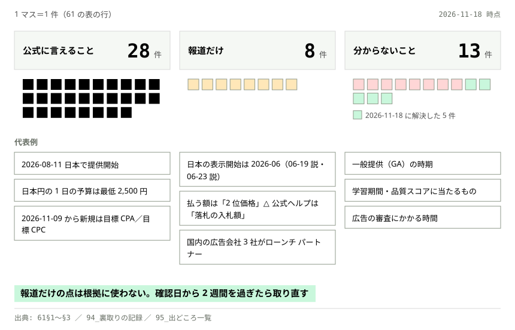

このメモについて
- 確認日: 2026-11-18（出典の番号は
95_出どころ一覧.md。詳しくは00_全体像.md） - 使い方: この媒体は月に何度も仕様が変わる。確認日から 2 週間を過ぎたら「見張る項目」の URL を取り直してから使う
- 凡例: ✓ 公式で確認 ／ △ 資料によって食い違う ／ ? 確認できず
- 取得の制約（重要）: openai.com と help.openai.com は自動取得を拒否（403）したため、担当はその内容を検索結果の抜粋で確かめた（〔公式・抜粋〕）。記録は
94_裏取りの記録.md）
地図
本文
1.公式に言えること（日付つき）

2026-11-18 時点で公式に言えることは 28 件、報道だけで公式に確かめられないことは 8 件、分からないことは 13 件（うち 5 件はその日のうちに解決）。この媒体は月に何度も仕様が変わるので、報道だけの点は提案の根拠に使わず、確認日から 2 週間を過ぎたら出典を取り直す。
出典: 61§1・61§2・61§3 ほか 10 件 · 2026-11-18 時点
- 日本で提供開始
- 日本はセルフサーブ「Available」
- ログインしていない利用者には全年齢向けの広告だけ出ることがある
- 課金はクリック（oCPC）か 1,000 表示（oCPM）を選ぶ
- 米国外の金融・ヘルスケア・法律サービスは原則禁止
- 暗号資産
表で見る（28 行。上の図のもとの表）
| # | 言えること | 時点 | 印 | 出典 |
|---|---|---|---|---|
| 1 | 2026-02-09 に米国でテスト開始。対象はログインした成人の無料版・Go | 2026-02-09 | ✓〔公式・抜粋〕 | S-11 |
| 2 | 日本で提供開始（英国・メキシコ・ブラジル・韓国と同時） | 2026-08-11 | ✓公式（本文確認） | S-11（日本語版にも記載） |
| 3 | 提供国は 89 か国、広告を出した広告主は 10 万超 | 2026-10-21 | ✓〔公式・抜粋〕 | S-17 |
| 4 | 買い方は 3 つ: OpenAI の営業（Ads Solutions）、代理店・技術パートナー、セルフサーブの Ads Manager（ベータ） | 2026-09-23 | ✓〔公式・抜粋〕 | S-16 |
| 5 | 日本はセルフサーブ「Available」。条件は広告を出し請求を受ける法人が利用可能な国にあること | ページの更新は約 3 週間前（2026-10 末） | ✓公式（本文確認） | S-32 |
| 6 | 日本円の最低の 1 日の予算は 2,500 円 | 2026-11-18 | ✓公式（本文確認） | S-34 |
| 7 | 日本で請求される広告主に、ChatGPT Ads の請求で消費税（JCT）を今は課さない | 2026-11-18 | ✓公式（本文確認、94#16） | S-38 |
| 8 | 支払いは後払い（セルフサーブはカード、営業経由は請求書） | 同上 | ✓公式（本文確認、94#16） | S-38 |
| 9 | 広告が出るのは無料版と Go。Plus・Pro・Business・Enterprise・Edu には出ない。18 歳未満（申告か予測）と一時チャットにも出ない。ログインしていない利用者には全年齢向けの広告だけ出ることがある。画像の生成中に複数画像の広告形式をテスト中 | 2026-11-18 | ✓公式（本文確認） | S-30 |
| 10 | 広告は回答の下に「スポンサー」と分けて出る。回答には影響しないと約束 | 同上 | ✓〔公式・抜粋〕 | S-30、S-18 |
| 11 | 選ばれ方: 今の会話の文脈と意図、LP・タイトル・本文、文脈ヒント、ターゲティング。パーソナライズがオンなら記憶・過去のチャット・広告への反応も | 同上 | ✓〔公式・抜粋〕 | S-30、S-44 |
| 12 | 広告主に渡るのは集計の数字だけ。会話・記憶・氏名・メール・正確な位置・IP は渡らない（△ 広告を通じて広告主に送ったメッセージは広告主が見る、と利用者向けヘルプは書き、エージェントのヘルプは「個々のチャットは受け取らない」と書く。05§9-4） | 同上 | ✓〔公式・抜粋〕 | S-11、S-30、S-49 |
| 13 | 目的は表示（CPM 課金）・クリック（CPC）・コンバージョン（成果に最適化し、課金はクリック（oCPC）か 1,000 表示（oCPM）を選ぶ。成果ごとには払わない）。oCPC はクリックの後の成果に、oCPM は表示とクリックの両方からの成果に最適化する（02§2-2） | 2026-11-18 | ✓公式（本文確認） | S-34、S-37、S-01 |
| 14 | 2026-11-09 から新規キャンペーンは目標 CPA／目標 CPC（どちらも平均の目標で、上限ではない）。既存の上限入札（Max Bid／Max CPC）は 2027-01-01 に廃止。API は 11-18 から新しい欄を推奨 | 2026-11-09 | ✓公式（本文確認） | S-36 |
| 15 | 1 日の予算は 7 日の平均。1 日は 2 倍、週は 7 倍まで。週の枠を早く使い切ると「有効」のまま次の週まで止まることがある（02§7-2） | 2026-11-18 | ✓公式（本文確認、94#15） | S-35、S-34 |
| 16 | 目的とコンバージョン最適化のイベントは作成後に変えられない。複製は別の目的か別の課金方法のキャンペーンを作るときだけ使える（02§2-2） | 2026-11-18 | ✓公式 | S-01、S-34 |
| 17 | 広告の形はチャット カード: タイトル 3〜50 字、本文 100 字まで、画像 1 枚か正方形 4〜6 枚、ブランド名とアイコン | 2026-10-26（複数画像の API） | ✓公式 | S-01 |
| 18 | ターゲティングは地域・端末（アプリ／Web）・カスタム オーディエンス（照合後 25,000 人以上。EEA・スイスは不可）・文脈ヒント（キーワードではない） | 2026-11-18 | ✓公式 | S-01 |
| 19 | 計測は計測ピクセル・コンバージョン API・画像タグ。報告の窓はクリック 7／14／30 日（既定 30）、ビュースルー 0／1 日（既定 1） | 2026-09-30（窓の追加） | ✓公式 | S-01 |
| 20 | 審査はブランド・アカウント・広告の各層と事業者の確認。LP は OAI-AdsBot が読めることが必須 | 2026-11-18 の抜粋 | ✓公式／〔公式・抜粋〕 | S-01、S-48 |
| 21 | 出せない: 成人向け、酒・たばこ、ギャンブル、政治、個別の求人・賃貸、偽造品、娯楽用ドラッグ。米国外の金融・ヘルスケア・法律サービスは原則禁止。ただしヘルプの国別の表では、米国外でも健康のソフトウェアとインフラ・金融ソフトウェアは可、預金・カード・保険・ローン・投資は承認済みの特定の広告主だけ、暗号資産・個人ローン・BNPL・送金などは米国外は不可（31§2-2、34§2-3）。初期は生活・家庭用品、地域サービス、旅行・体験、デジタル製品・教育が中心 | ポリシー v1.6（2026-09-10 更新） | ✓公式（本文確認） | S-19、S-46 |
| 22 | 「クリエイティブの強化」（文面の書き換え・翻訳・画像のリサイズ・リンク先の変更）が既定で有効。営業が管理するアカウントは対象外。アカウントかキャンペーンで止められる（キャンペーンの設定が優先）。変わった文面を 1 本ずつ事前に確かめる手段は無い | 2026-10-30 から | ✓公式（本文確認） | S-43 |
| 23 | 自然な商品の表示は広告ではない（ChatGPT が独自に選ぶ） | 2026-11-18 の抜粋 | ✓〔公式・抜粋〕 | S-51 |
| 24 | 商品フィードの標準のアップロードは今は米国向け（共通形式は US・CA・MX） | 2026-11-18 | ✓公式 | S-03 |
| 26 | 払う額は「オークションの最終的な落札の入札額」と公式ヘルプは書く（どの入札戦略でも同じ）。下の報道の「2 位価格」とは食い違う | 2026-11-18 | ✓公式（本文確認）（△ 報道と食い違い） | S-36 |
| 27 | 新しいセルフサーブのアカウントは、最初は自国（アカウントの国）にしか出せない場合がある。国を選んでも上書きされない。条件の金額は教えない | 2026-11-18 | ✓公式（本文確認） | S-34 |
| 28 | 端末の指定: Android アプリ・Android Web・パソコンの Web・iOS アプリ・iOS Web の 5 つ | 2026-11-18 | ✓公式（本文確認） | S-34 |
| 25 | スポンサーのビジネス エージェント（広告から企業の AI と会話）。提供範囲は △: 公式ブログは米国で一部の広告主とテスト（S-15、2026-09-16）、ヘルプは国の限定を書かず「対象の広告主へ数週間で展開」（S-49、11-12 ごろ更新）。付けられるのはコンバージョン目的のキャンペーンだけ、会話ごとの別料金は無い（05§9） | 2026-11-18 | ✓公式（S-49 本文）／△ | S-15、S-49 |
2.報道だけで、公式では確かめられないこと
| # | 報道の内容 | 出どころ | 公式で確かめられない点 |
|---|---|---|---|
| 1 | 日本では 2026-06 中旬〜下旬に広告の表示が始まった（06-19 説、06-23 説） | R-01、R-02 | 公式の日付は 08-11 の「提供開始」だけ。6 月はパイロットだった可能性〔推測〕 |
| 3 | 技術パートナーの Equativ が日本を含む市場で出稿を支援 | R-04 | 公式の一覧に名前が見当たらない |
| 4 | Instant Checkout（チャット内の即購入）を 2026-03 に縮小し、加盟店サイトでの購入に寄せた | R-05 | 廃止の公式発表は無い。今の公式文書に Instant Checkout の語が無いことだけ確認 |
| 5 | 日本の Go の料金は月 1,500 円（1,400 円とする記事もある） | R-07 ほか | 料金表の公式ページは未取得 |
| 6 | オークションは「関連性で重みづけした 2 位価格」、勝者は LLM ではなく別のオークションが決める | R-08（S-18 の要約） | S-18 の日本語版の本文は読んだ（02§4・23§2-2）。オークションが「品質を加味したランキング、価格設定」をすると書くが、「2 位」「セカンド プライス」に当たる語は無い。英語版は未読。公式ヘルプ（S-36）は「落札の入札額が払う額を決める」と書く（△） |
| 7 | 日本では代理店が広告主の代わりにアカウントを開けない | 日本の解説記事〔第三者〕 | 公式には「広告主ごとに別アカウント」とあるだけ |
| 8 | ChatGPT の回答の 3 割強に広告が出ている | 第三者の記事 | 公式の数字は無い。使わない |
3.分からないこと ?（2026-11-18 時点）
- 都道府県（地域）と郵便番号で指定できる
- Negative Phrases
- 文字数の数え方は解決
- 含まれる
| # | 分からないこと | 確かめ方 |
|---|---|---|
| 1 | 一般提供（GA）の時期。公式は今も「テスト」「ベータ」 | S-11 の更新を見る |
| 2 | 広告が出る国・セルフサーブの国の全一覧 | S-32 の本文 |
| 3 | ~~日本の中で地域を指定できるか~~ → 都道府県（地域）と郵便番号で指定できる。市の単位は試した範囲で出ない（?）。62_管理画面で確かめたこと.md #1 | 2026-11-18 画面で確認 |
| 4 | 日本向けの商品フィード広告、日本の加盟店の商品フィードの提出、ChatGPT Wallet の提供国 | S-03 の Geo tagging の節、Business Hub |
| 5 | 学習期間の定義・日数、品質スコアに当たる指標（公式の語は「キャンペーンの学習が進む中で」〔S-36〕まで。02§9） | ヘルプの新しい記事 |
| 6 | ~~「どんな会話で出たか」のレポート~~ → レポートの列に会話・話題に当たるものは無い（62 #7） | 2026-11-18 画面で確認 |
| 7 | 年齢・性別などの属性ターゲティング（除外キーワードに当たるものは Negative Phrases＝資格のある広告主だけ。資格の条件・日本で使えるかは ?） | help 20001207 |
| 8 | 日本語の審査基準、日本の法規（薬機法・景表法）の扱い（文字数の数え方は解決: 全角も 1 字、画面の目安はタイトル 32・説明 54、超えると切れる警告。62 #3・#4） | S-19、S-46 の本文、日本語版ヘルプ |
| 9 | 広告の審査にかかる時間、異議の回数の上限と決まるまでの日数（事業者の確認の「最大 7 営業日」は S-46 の本文で確認済み。34§1-4・§13） | ヘルプの新しい記事 |
| 10 | ~~ビュースルーが「コンバージョン」に含まれるか~~ → 表示後の窓が 1 日なら含まれる（0 日なら含まれない）。窓はレポートだけに効く | 2026-11-18 解決（help 20001214） |
| 11 | ~~表示課金のコンバージョン最適化（oCPM）があるか~~ → ある（ヘルプ S-34 の本文。API で使えるかは ?） | 2026-11-18 解決 |
| 12 | 日本円の CPC の目安。公式に数字は無い。「CPC は上限入札 3〜5 ドルから」は基本のページ S-31 にだけ残る旧方式の古い記述で、入札のページ S-36 の本文には無い（02§5-2）。公式の手順は直近の実績から目標を置くこと | S-36、S-31 |
| 13 | ~~ログインしていない利用者に出るか~~ → 出ることがある（全年齢向けの広告だけ。S-30 の本文） | 2026-11-18 解決 |
4.日本の運用者が今やれること・やらないこと

日本で始めるなら、出稿の前に LP のクローラーの点検（費用ゼロ）と事業者の確認、後で変えられない国・通貨・タイムゾーンと強化の設定を済ませ、出稿はクリック目的と計測から入り、計測が安定してからコンバージョン目的を新しいキャンペーンで作る（順番は〔推測〕）。規制業種の計画・日本向けの商品フィード・キーワード設計の移植・上限入札は、今は組まない。
出典: 61§4・C-審査-002・C-審査-003 ほか 12 件 · 2026-11-18 時点
- LP のクローラー点検
- 小さなテスト出稿の準備
- 目的ごとに別キャンペーン
- 計測はピクセル＋コンバージョン API
- 文脈ヒントを具体文で
- クリエイティブの強化の設定を確認
やれること
- 1LP のクローラー点検
（費用ゼロ）: robots.txt と WAF・CDN（Cloudflare 等）が OAI-AdsBot と OAI-SearchBot を弾いていないか確かめる。広告の審査にも、自然な商品表示・検索にも効く ✓ S-48、S-03
- 2小さなテスト出稿の準備
日本の法人で ads.openai.com にアカウントを作り、事業者の確認を先に済ませる（確認に時間がかかる可能性）。最低 2,500 円／日。国・通貨・タイムゾーンは作成後に変えられないので最初に決める ✓ S-32、S-34、S-39
- 3目的ごとに別キャンペーン
まずクリック（目標 CPC）で始め、計測が安定したらコンバージョン（目標 CPA）を新しいキャンペーンとして作る〔推測〕（進め方は書き手の案。公式にあるのは「目的とコンバージョン イベントは作成後に変えられない」「複製は別の目的か別の課金のときだけ」まで ✓ S-01、S-34。00§3-2・02§2-4）
- 4計測はピクセル＋コンバージョン API
公式は API のほうが確実と書く。同じイベント ID で重複を除く。Google と比べる表ではビュースルー 0 日にそろえる ✓ S-01
- 5文脈ヒントを具体文で
「商品＋使い方＋悩み」を書き、広告グループを分けて比べる ✓ S-01
- 6クリエイティブの強化の設定を確認
表現の管理が要る業種はオプトアウトしてから出す ✓ S-43
- 7既存顧客の除外
除外のオーディエンスは人数の下限なし ✓ S-01
- 8広告以外の手
Business Hub でビジネスの登録ができるかを確かめる（日本で可能かは要確認）。商品ページの価格・在庫・レビューを正確に保つ △ S-52、S-51
やらないこと
- 1
「AI の回答の中で自社を薦めさせる広告」として提案しない（広告は回答の下の別枠）✓ S-30、S-18
- 2
日本の健康食品・クリニック・金融・士業・酒・ギャンブルの出稿計画を立てない（米国外の金融・健康は原則禁止など）✓／△ S-19、S-46
- 3
日本向けに商品フィード広告を前提にしない（標準のアップロードは米国向け）✓ S-03
- 4
Google のキーワード設計・除外キーワードの考え方をそのまま移さない ✓ S-01
- 5
上限入札（Max Bid／Max CPC）で新しく組まない。既存は 2026 年内に移す ✓ S-36
- 6
Instant Checkout・ACP の実装を勧める古い記事に従わない（今の公式文書は Wallet・ブラウザ・プラグインの構成）〔報道〕R-05、✓ S-03
- 7
「どんな会話で出たか」を前提にした報告を約束しない ?
5.見張る項目（何が出たら知識を書き換えるか）
変更の記録
- 2026-11-18 初版
- 2026-11-18 第 5 段（仕上げ）: 各論の本文確認と 94 に合わせて直した — §4 やれること 3 の進め方を〔推測〕と分けた（公式は「目的は作成後に変えられない」まで）。§1 #7・#8・#15 の印を本文確認に、#12 に広告を通じた会話の △、#13 に oCPM の最適化の対象、#16 に複製の使い方、#21 に米国外の例外（健康・金融のソフトウェア可、暗号資産は米国外不可）、#25 のビジネス エージェントの提供範囲を △ に。§2 #6（S-18 の日本語版に「2 位価格」の語は無い）。§3 #5（学習の語）、#9（7 営業日は本文で確認）、#12（「CPC 3〜5 ドル」は S-31 にだけ残る古い記述）
[ 元 ] ChatGPT広告の基礎/61_いま言えること言えないこと.md